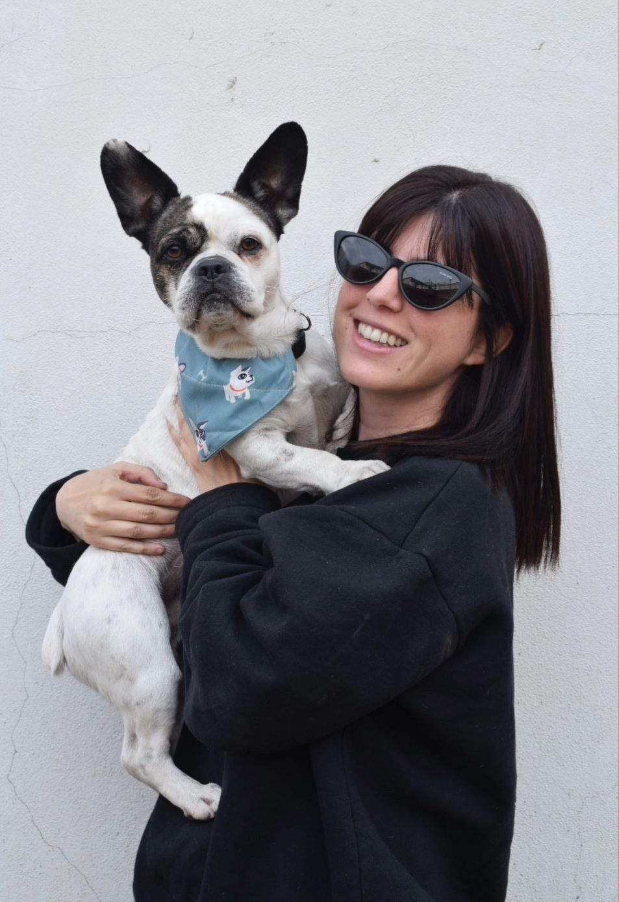

<!doctype html>
<html lang="es">
<head>
<meta charset="utf-8">
<title>Sobre mí · Chinni Design Studio</title>
<meta name="viewport" content="width=device-width, initial-scale=1">
<meta name="description" content="Melina Chinni, diseñadora UX/UI y visual en Buenos Aires: recorrido, formación, herramientas y clientes de distintos países.">
<link rel="preconnect" href="https://fonts.googleapis.com">
<link rel="preconnect" href="https://fonts.gstatic.com" crossorigin>
<link href="https://fonts.googleapis.com/css2?family=Outfit:wght@200;300;400;500;600&family=DM+Sans:ital,opsz,wght@0,9..40,300..600;1,9..40,400&display=swap" rel="stylesheet">
<link rel="stylesheet" href="assets/shared.css">
<!-- Globo de clientes: d3 + topojson -->
<script src="https://cdnjs.cloudflare.com/ajax/libs/d3/7.9.0/d3.min.js"></script>
<script src="https://cdnjs.cloudflare.com/ajax/libs/topojson/3.0.2/topojson.min.js"></script>
</head>
<body class="case" data-palette="niebla" data-fonts="default">
<div id="root"></div>

<script src="https://unpkg.com/react@18.3.1/umd/react.development.js" integrity="sha384-hD6/rw4ppMLGNu3tX5cjIb+uRZ7UkRJ6BPkLpg4hAu/6onKUg4lLsHAs9EBPT82L" crossorigin="anonymous"></script>
<script src="https://unpkg.com/react-dom@18.3.1/umd/react-dom.development.js" integrity="sha384-u6aeetuaXnQ38mYT8rp6sbXaQe3NL9t+IBXmnYxwkUI2Hw4bsp2Wvmx4yRQF1uAm" crossorigin="anonymous"></script>
<script src="https://unpkg.com/@babel/standalone@7.29.0/babel.min.js" integrity="sha384-m08KidiNqLdpJqLq95G/LEi8Qvjl/xUYll3QILypMoQ65QorJ9Lvtp2RXYGBFj1y" crossorigin="anonymous"></script>
<script type="text/babel" src="assets/i18n.jsx"></script>
<script type="text/babel" src="assets/components.jsx"></script>

<script type="text/babel">
// Testimonios: solo reales, con permiso del cliente. Mientras la lista esté vacía, la sección no se muestra.
// Formato: { quote: "…", name: "Nombre", role: "Cargo · Empresa", country: "País" }
const TESTIMONIALS = [];

const CONTENT = {
  es: {
    kicker: "Sobre mí",
    title: "Hola, soy <em>Melina</em>",
    lede: "Soy diseñadora UX/UI y visual en Buenos Aires. Diseño productos digitales, marcas e imágenes con IA, y acompaño cada proyecto hasta que queda publicado y funcionando.",
    stats: [
      { value: "+4", label: "años diseñando" },
      { value: "6", label: "países" },
      { value: "40+", label: "proyectos" },
    ],
    ctaWork: "Ver trabajos",
    ctaContact: "Trabajemos juntos",
    photoCaption: "Con Bandido, mi compañero de oficina. Sí, es el mismo del video del inicio.",

    approachKicker: "Cómo trabajo",
    approachTitle: "De la idea al <em>sitio publicado</em>",
    approachBody: [
      "UX/UI es la base de mi trabajo: entender a quién le hablamos y diseñar experiencias claras. Sobre esa base sumo diseño visual e inteligencia artificial para crear imágenes, videos y sitios que se ven y funcionan bien.",
      "Me gusta hacerme cargo del proceso completo, para que el proyecto no se quede en un archivo de Figma.",
    ],

    clientsKicker: "Clientes",
    clientsTitle: "Trabajo con marcas de <em>distintos países</em>",
    clientsLede: "De forma remota, en español y en inglés.",
    countries: ["Estados Unidos", "Dinamarca", "España", "Chile", "Argentina"],
    andMore: "y más",

    timelineKicker: "Recorrido",
    timelineTitle: "Experiencia y <em>formación</em>",
    types: { work: "Experiencia", study: "Formación", studio: "Freelance" },
    timeline: [
      { when: "2022 – hoy", type: "studio", title: "Chinni Design Studio", place: "Mi estudio · diseñadora freelance · remoto", desc: "Desde 2022 trabajo de forma independiente con clientes de distintos países, principalmente a través de Upwork. Apps, sitios, landings y dashboards; marcas e imágenes y video con IA; y desarrollo asistido por IA para dejar los sitios publicados." },
      { when: "2026", type: "work", title: "Diseñadora UX/UI", place: "Drimo · agencia", desc: "Trabajo en equipo dentro de agencia, donde sumé Figma Make a mi flujo de trabajo." },
      { when: "2026", type: "study", title: "Creación de contenido con IA", place: "Modo Máquina", desc: "Formación específica en imágenes y video generativos con Higgsfield." },
      { when: "2024", type: "study", title: "Google UX Design Professional Certificate", place: "Google · Coursera", desc: "Siete cursos sobre el proceso de UX de punta a punta: research, diseño centrado en el usuario y prototipado." },
      { when: "2023", type: "study", title: "UX/UI Design Bootcamp", place: "Human Experience Hub", desc: "Bootcamp intensivo de diseño de producto." },
      { when: "2021 – 2022", type: "study", title: "Diploma en Diseño UX/UI", place: "Coderhouse", desc: "Donde empezó todo. Mis primeros proyectos: una app de viajes tipo Uber pensada para mujeres, un rediseño de la plataforma de Disney con nuevas funciones y un proyecto de UX Writing." },
    ],
    selfTaught: { title: "En paralelo, autodidacta", desc: "Aprendí por mi cuenta herramientas web y no-code como Shopify, Framer, Webflow y Wix. Seguir aprendiendo es parte de mi forma de trabajar." },

    toolsKicker: "Herramientas",
    toolsTitle: "Con qué <em>trabajo</em>",
    tools: [
      { name: "Figma", logo: "figma", cat: "Diseño · Figma Make · FigJam" },
      { name: "Claude", logo: "claude", cat: "Desarrollo con IA" },
      { name: "Codex", glyph: "codex", cat: "Desarrollo con IA" },
      { name: "Lovable", glyph: "lovable", cat: "Desarrollo con IA" },
      { name: "GitHub", logo: "github", cat: "Código y versiones" },
      { name: "Vercel", logo: "vercel", cat: "Publicación" },
      { name: "Higgsfield", glyph: "higgsfield", cat: "Imágenes y video con IA" },
      { name: "Midjourney", glyph: "midjourney", cat: "Imágenes con IA" },
      { name: "Framer", logo: "framer", cat: "Web no-code" },
      { name: "Webflow", logo: "webflow", cat: "Web no-code" },
      { name: "Shopify", logo: "shopify", cat: "E-commerce" },
      { name: "Wix", logo: "wix", cat: "Web no-code" },
    ],
    langs: "Español nativo · Inglés B2",

    testimonialsKicker: "Testimonios",
    testimonialsTitle: "Lo que dicen <em>mis clientes</em>",

    endTitle: "¿Hablamos de <em>tu proyecto</em>?",
    endLede: "Contame qué necesitás y te respondo dentro de las 24 horas.",
  },
  en: {
    kicker: "About me",
    title: "Hi, I'm <em>Melina</em>",
    lede: "I'm a UX/UI and visual designer based in Buenos Aires. I design digital products, brands and AI imagery, and I see every project through until it's live and working.",
    stats: [
      { value: "+4", label: "years designing" },
      { value: "6", label: "countries" },
      { value: "40+", label: "projects" },
    ],
    ctaWork: "See my work",
    ctaContact: "Let's work together",
    photoCaption: "With Bandido, my office buddy. Yes, he's the one in the video on the homepage.",

    approachKicker: "How I work",
    approachTitle: "From idea to <em>live site</em>",
    approachBody: [
      "UX/UI is the foundation of my work: understanding who we're talking to and designing clear experiences. On top of that I bring visual design and AI to create images, videos and websites that look and work great.",
      "I like to own the whole process, so the project doesn't stay stuck in a Figma file.",
    ],

    clientsKicker: "Clients",
    clientsTitle: "I work with brands from <em>different countries</em>",
    clientsLede: "Remotely, in Spanish and in English.",
    countries: ["United States", "Denmark", "Spain", "Chile", "Argentina"],
    andMore: "and more",

    timelineKicker: "Journey",
    timelineTitle: "Experience & <em>education</em>",
    types: { work: "Experience", study: "Education", studio: "Freelance" },
    timeline: [
      { when: "2022 – now", type: "studio", title: "Chinni Design Studio", place: "My studio · freelance designer · remote", desc: "Since 2022 I work independently with clients from different countries, mainly through Upwork. Apps, websites, landing pages and dashboards; brands and AI images and video; and AI-assisted development to ship live websites." },
      { when: "2026", type: "work", title: "UX/UI Designer", place: "Drimo · agency", desc: "Team work inside an agency, where I added Figma Make to my workflow." },
      { when: "2026", type: "study", title: "AI content creation", place: "Modo Máquina", desc: "Focused training in generative images and video with Higgsfield." },
      { when: "2024", type: "study", title: "Google UX Design Professional Certificate", place: "Google · Coursera", desc: "Seven courses on the end-to-end UX process: research, user-centered design and prototyping." },
      { when: "2023", type: "study", title: "UX/UI Design Bootcamp", place: "Human Experience Hub", desc: "Intensive product design bootcamp." },
      { when: "2021 – 2022", type: "study", title: "UX/UI Design Diploma", place: "Coderhouse", desc: "Where it all started. My first projects: an Uber-style ride app designed for women, a redesign of the Disney platform with new features and a UX Writing project." },
    ],
    selfTaught: { title: "Alongside, self-taught", desc: "I taught myself web and no-code tools like Shopify, Framer, Webflow and Wix. Continuous learning is part of how I work." },

    toolsKicker: "Tools",
    toolsTitle: "What I <em>work with</em>",
    tools: [
      { name: "Figma", logo: "figma", cat: "Design · Figma Make · FigJam" },
      { name: "Claude", logo: "claude", cat: "AI-assisted build" },
      { name: "Codex", glyph: "codex", cat: "AI-assisted build" },
      { name: "Lovable", glyph: "lovable", cat: "AI-assisted build" },
      { name: "GitHub", logo: "github", cat: "Code & versions" },
      { name: "Vercel", logo: "vercel", cat: "Publishing" },
      { name: "Higgsfield", glyph: "higgsfield", cat: "AI images & video" },
      { name: "Midjourney", glyph: "midjourney", cat: "AI images" },
      { name: "Framer", logo: "framer", cat: "No-code web" },
      { name: "Webflow", logo: "webflow", cat: "No-code web" },
      { name: "Shopify", logo: "shopify", cat: "E-commerce" },
      { name: "Wix", logo: "wix", cat: "No-code web" },
    ],
    langs: "Spanish native · English B2",

    testimonialsKicker: "Testimonials",
    testimonialsTitle: "What <em>clients say</em>",

    endTitle: "Shall we talk about <em>your project</em>?",
    endLede: "Tell me what you need and I'll get back to you within 24 hours.",
  },
};

const Rich = ({ as: Tag = "span", html, ...rest }) => <Tag {...rest} dangerouslySetInnerHTML={{ __html: html }} />;
const Arrow = ({ size = 16 }) => (
  <svg className="arrow" width={size} height={size} viewBox="0 0 24 24" fill="none" stroke="currentColor" strokeWidth="1.8" strokeLinecap="round" strokeLinejoin="round" aria-hidden="true"><path d="M5 12h14M13 6l6 6-6 6" /></svg>
);

const Hero = ({ c }) => (
  <section className="about-hero">
    <div className="container about-hero-grid">
      <div className="reveal">
        <div className="eyebrow">{c.kicker}</div>
        <Rich as="h1" html={c.title} className="about-title" />
        <p className="about-lede">{c.lede}</p>
        <div className="about-stats">
          {c.stats.map(s => (
            <div key={s.label}><strong>{s.value}</strong><span>{s.label}</span></div>
          ))}
        </div>
        <div className="about-ctas">
          <a href="contact.html" className="btn btn-primary">{c.ctaContact} <Arrow /></a>
          <a href="work.html" className="btn btn-outline">{c.ctaWork}</a>
        </div>
      </div>
      <figure className="about-photo reveal">
        
        <figcaption>{c.photoCaption}</figcaption>
      </figure>
    </div>
  </section>
);

// Solo texto a la izquierda; de fondo, la escena de noche con Bandido durmiendo a la derecha
const Approach = ({ c }) => (
  <section className="about-approach-band">
    <div className="container">
      <div className="about-approach-copy reveal">
        <div className="eyebrow">{c.approachKicker}</div>
        <Rich as="h2" html={c.approachTitle} />
        {c.approachBody.map((p, i) => <p key={i} className="about-approach-text">{p}</p>)}
      </div>
    </div>
  </section>
);

// === Globo terráqueo que gira y va mostrando los países de clientes ===
// Orden igual al de c.countries: Estados Unidos, Dinamarca, España, Chile, Argentina
const CLIENT_COUNTRIES = [
  { id: "840", coords: [-98, 39], color: "170, 197, 251" },  // Estados Unidos · celeste
  { id: "208", coords: [10, 56], color: "196, 172, 240" },   // Dinamarca · lila
  { id: "724", coords: [-3.7, 40.3], color: "244, 212, 96" }, // España · amarillo
  { id: "152", coords: [-71, -35], color: "229, 175, 233" },  // Chile · rosa
  { id: "032", coords: [-64, -34], color: "150, 210, 162" },  // Argentina · verde
];
const WORLD_URL = "https://cdn.jsdelivr.net/npm/world-atlas@2/countries-110m.json";

const Globe = ({ names, onFront }) => {
  const canvasRef = React.useRef(null);
  React.useEffect(() => {
    if (!window.d3 || !window.topojson) return;
    const canvas = canvasRef.current;
    const ctx = canvas.getContext("2d");
    const reduceMotion = window.matchMedia("(prefers-reduced-motion: reduce)").matches;
    let land = null, countries = null, raf, visible = true, lambda = -25, last = performance.now(), front = -1;

    const size = () => {
      const w = canvas.clientWidth, dpr = window.devicePixelRatio || 1;
      canvas.width = w * dpr; canvas.height = w * dpr;
      ctx.setTransform(dpr, 0, 0, dpr, 0, 0);
      return w;
    };
    let w = size();
    const projection = d3.geoOrthographic().clipAngle(90).precision(0.6);
    const path = d3.geoPath(projection, ctx);
    const graticule = d3.geoGraticule10();

    const draw = (t) => {
      const r = w / 2 - 14;
      projection.scale(r).translate([w / 2, w / 2]).rotate([lambda, -12]);
      ctx.clearRect(0, 0, w, w);

      // Esfera: degradé lila → celeste, con halo suave
      const g = ctx.createRadialGradient(w * 0.38, w * 0.32, r * 0.1, w / 2, w / 2, r);
      g.addColorStop(0, "#ffffff");
      g.addColorStop(0.55, "#e9ecfd");
      g.addColorStop(1, "#cfd6f8");
      ctx.save();
      ctx.shadowColor = "rgba(170, 197, 251, 0.55)";
      ctx.shadowBlur = 40;
      ctx.beginPath(); path({ type: "Sphere" }); ctx.fillStyle = g; ctx.fill();
      ctx.restore();

      ctx.beginPath(); path(graticule); ctx.strokeStyle = "rgba(57, 53, 130, 0.07)"; ctx.lineWidth = 1; ctx.stroke();

      if (land) {
        ctx.beginPath(); path(land); ctx.fillStyle = "rgba(111, 95, 208, 0.26)"; ctx.fill();
        ctx.strokeStyle = "rgba(255, 255, 255, 0.9)"; ctx.lineWidth = 0.6; ctx.stroke();
        CLIENT_COUNTRIES.forEach(cc => {
          const f = countries.get(cc.id);
          if (!f) return;
          ctx.beginPath(); path(f); ctx.fillStyle = `rgba(${cc.color}, 0.95)`; ctx.fill();
        });
      }

      // País más cerca del frente y marcadores con pulso
      const center = [-lambda, 12];
      let best = -1, bestD = 1.15;
      CLIENT_COUNTRIES.forEach((cc, i) => {
        const d = d3.geoDistance(cc.coords, center);
        if (d < bestD) { bestD = d; best = i; }
      });
      CLIENT_COUNTRIES.forEach((cc, i) => {
        if (d3.geoDistance(cc.coords, center) > Math.PI / 2 - 0.05) return;
        const [x, y] = projection(cc.coords);
        const pulse = reduceMotion ? 0 : (Math.sin(t / 400 + i) + 1) / 2;
        ctx.beginPath(); ctx.arc(x, y, 7 + pulse * 7, 0, Math.PI * 2);
        ctx.fillStyle = `rgba(${cc.color}, ${0.35 - pulse * 0.2})`; ctx.fill();
        ctx.beginPath(); ctx.arc(x, y, 4.5, 0, Math.PI * 2);
        ctx.fillStyle = "#1c1a3a"; ctx.fill();
        ctx.lineWidth = 2; ctx.strokeStyle = "#fff"; ctx.stroke();
        if (i === best) {
          // Etiqueta del país que está al frente
          ctx.font = "500 14px 'DM Sans', system-ui, sans-serif";
          const label = names[i], tw = ctx.measureText(label).width;
          const bx = Math.min(Math.max(x + 12, 8), w - tw - 30), by = y - 38;
          ctx.fillStyle = "rgba(255, 255, 255, 0.95)";
          ctx.beginPath(); ctx.roundRect(bx, by, tw + 22, 28, 14); ctx.fill();
          ctx.lineWidth = 1.5; ctx.strokeStyle = `rgba(${cc.color}, 1)`; ctx.stroke();
          ctx.fillStyle = "#1c1a3a"; ctx.fillText(label, bx + 11, by + 19);
        }
      });
      if (best !== front) { front = best; onFront(best); }
    };

    const tick = (t) => {
      const dt = Math.min(64, t - last) / 1000; last = t;
      if (!reduceMotion) lambda += 9 * dt; // grados por segundo
      draw(t);
      if (visible && !reduceMotion) raf = requestAnimationFrame(tick);
    };

    // Solo anima cuando el globo está en pantalla
    const io = new IntersectionObserver(([e]) => {
      visible = e.isIntersecting;
      if (visible) { last = performance.now(); cancelAnimationFrame(raf); raf = requestAnimationFrame(tick); }
    });
    io.observe(canvas);
    // Se ajusta cuando cambia el tamaño del contenedor (no solo de la ventana)
    const ro = new ResizeObserver(() => { const nw = canvas.clientWidth; if (nw && nw !== w) { w = size(); draw(performance.now()); } });
    ro.observe(canvas);

    if (reduceMotion) lambda = 40; // vista fija sobre América
    fetch(WORLD_URL).then(r => r.json()).then(world => {
      land = topojson.feature(world, world.objects.land);
      const feats = topojson.feature(world, world.objects.countries).features;
      countries = new Map(feats.map(f => [String(f.id).padStart(3, "0"), f]));
      draw(performance.now());
    }).catch(() => {});
    draw(performance.now());

    return () => { cancelAnimationFrame(raf); io.disconnect(); ro.disconnect(); };
  }, [names.join("|")]);

  return <canvas ref={canvasRef} className="globe-canvas" aria-hidden="true" />;
};

const Clients = ({ c }) => {
  const reduceMotion = window.matchMedia("(prefers-reduced-motion: reduce)").matches;
  // Los países aparecen a medida que el globo los muestra; el que está al frente se resalta
  const [seen, setSeen] = React.useState(() => new Set(reduceMotion ? c.countries.map((_, i) => i) : []));
  const [active, setActive] = React.useState(-1);
  const onFront = React.useCallback((i) => {
    setActive(i);
    if (i >= 0) setSeen(prev => prev.has(i) ? prev : new Set([...prev, i]));
  }, []);
  return (
    <section className="cs-section about-clients">
      <div className="container about-clients-grid">
        <div className="reveal">
          <div className="eyebrow">{c.clientsKicker}</div>
          <Rich as="h2" html={c.clientsTitle} />
          <p className="cs-body">{c.clientsLede}</p>
          <ul className="about-countries">
            {c.countries.map((country, i) => (
              <li key={country} className={`${seen.has(i) ? "is-seen" : ""} ${active === i ? "is-active" : ""}`} style={{ "--glow-c": CLIENT_COUNTRIES[i].color }}>
                {country}
              </li>
            ))}
            <li className="more is-seen">{c.andMore}</li>
          </ul>
        </div>
        <div className="globe-wrap reveal">
          <Globe names={c.countries} onFront={onFront} />
        </div>
      </div>
    </section>
  );
};

const Timeline = ({ c }) => (
  <section className="cs-section cs-tint">
    <div className="container">
      <div className="section-head reveal">
        <div className="eyebrow">{c.timelineKicker}</div>
        <Rich as="h2" html={c.timelineTitle} />
      </div>
      <ol className="timeline">
        {c.timeline.map((t, i) => (
          <li key={i} className={`timeline-item reveal type-${t.type}`}>
            <div className="timeline-when">{t.when}</div>
            <div className="timeline-dot" aria-hidden="true"></div>
            <article className="timeline-card">
              <span className="timeline-type">{c.types[t.type]}</span>
              <h3>{t.title}</h3>
              <div className="timeline-place">{t.place}</div>
              <p>{t.desc}</p>
            </article>
          </li>
        ))}
      </ol>
      <div className="timeline-note reveal">
        <h3>{c.selfTaught.title}</h3>
        <p>{c.selfTaught.desc}</p>
      </div>
    </div>
  </section>
);

// Íconos simples para las herramientas sin logo en Simple Icons (no son sus logos oficiales)
const TOOL_GLYPHS = {
  codex: <path d="M5 8l4 4-4 4M12 17h7" />,
  lovable: <path d="M12 20s-7-4.4-7-10a4 4 0 0 1 7-2.6A4 4 0 0 1 19 10c0 5.6-7 10-7 10z" />,
  higgsfield: <><path d="M7 5v14M17 5v14M7 12h10" /><circle cx="12" cy="12" r="10" opacity=".35" /></>,
  midjourney: <><path d="M12 3v14M12 4l6 12h-6M12 7l-5 10h5" /><path d="M4 19c2.5 1.5 13.5 1.5 16 0" /></>,
};

const Tools = ({ c }) => (
  <section className="cs-section">
    <div className="container">
      <div className="section-head reveal">
        <div className="eyebrow">{c.toolsKicker}</div>
        <Rich as="h2" html={c.toolsTitle} />
      </div>
      <ul className="tool-grid">
        {c.tools.map((tl, i) => (
          <li key={tl.name} className="tool-tile reveal" style={{ transitionDelay: `${(i % 6) * 50}ms` }}>
            <span className="tool-logo" aria-hidden="true">
              {tl.logo
                ? 
                : <svg width="28" height="28" viewBox="0 0 24 24" fill="none" stroke="currentColor" strokeWidth="1.7" strokeLinecap="round" strokeLinejoin="round">{TOOL_GLYPHS[tl.glyph]}</svg>}
            </span>
            <strong>{tl.name}</strong>
            <span className="tool-cat">{tl.cat}</span>
          </li>
        ))}
      </ul>
      <p className="about-langs reveal">{c.langs}</p>
    </div>
  </section>
);

const Testimonials = ({ c }) => {
  if (!TESTIMONIALS.length) return null;
  return (
    <section className="cs-section cs-tint">
      <div className="container">
        <div className="section-head reveal">
          <div className="eyebrow">{c.testimonialsKicker}</div>
          <Rich as="h2" html={c.testimonialsTitle} />
        </div>
        <div className="about-testimonials">
          {TESTIMONIALS.map(t => (
            <figure key={t.name} className="cs-card reveal">
              <blockquote>“{t.quote}”</blockquote>
              <figcaption><strong>{t.name}</strong><span>{t.role} · {t.country}</span></figcaption>
            </figure>
          ))}
        </div>
      </div>
    </section>
  );
};

const End = ({ c }) => (
  <section className="cs-result">
    <div className="container-narrow reveal">
      <Rich as="h2" html={c.endTitle} />
      <p>{c.endLede}</p>
      <div className="cs-result-ctas">
        <a href="contact.html" className="btn btn-light">{c.ctaContact} <Arrow /></a>
        <a href="work.html" className="btn btn-ghost-light">{c.ctaWork}</a>
      </div>
    </div>
  </section>
);

const Page = () => {
  const { lang } = useT();
  const c = CONTENT[lang] || CONTENT.es;
  useReveal();
  return (
    <>
      <Hero c={c} />
      <Approach c={c} />
      <Clients c={c} />
      <Timeline c={c} />
      <Tools c={c} />
      <Testimonials c={c} />
      <End c={c} />
    </>
  );
};

const App = () => (
  <LangProvider>
    <Nav active="about" />
    <Page />
    <Footer />
  </LangProvider>
);

ReactDOM.createRoot(document.getElementById("root")).render(<App />);
</script>
</body>
</html>
